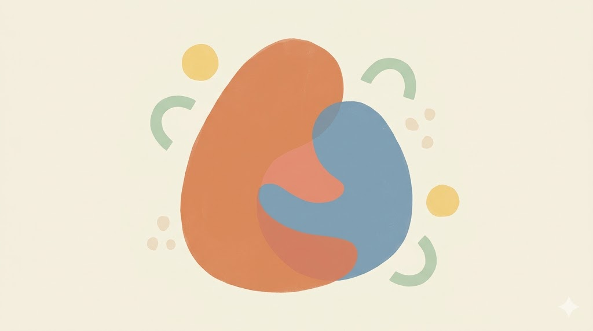

From the textbook and course by Miro Samek, Phd., I've been learning all about Active Objects and Hierarchical State Machines!
I've written a Linux Shell and a RTOS kernel for ARM-CM4, but my main project lately has been writing an Active Object framework.

I've been studying the ground-breaking book Attachment Disturbances in Adults: Treatment for Comprehensive Repair.
It's a clinical textbook for understanding and treating attachment,
which is profoundly important in a person's life!
I check out a LOT of new bands from all over the world.
I decided to share the best ones I'm listening to.
If you like to go see bands playing in clubs, like Garage Rock/Punk or Hardcore or Metal it could be a nice resource.
|
"If you do what everyone else does, you'll just get the same results they get." — me |